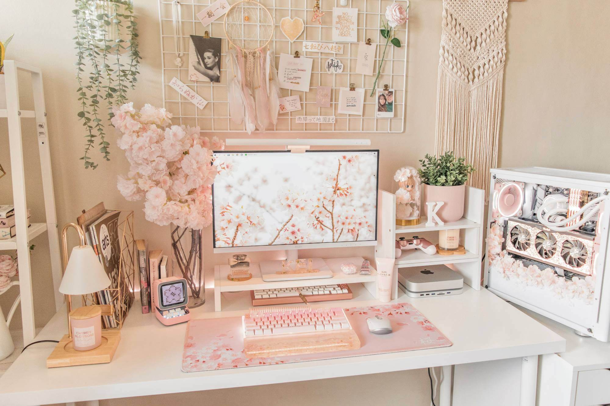

Hello! I'm a passionate Computer Science student who loves to explore creativity in every form — whether that's AI and gaming, cooking, fashion design, or yoga and wellness.
Through my journey, I've learned that growth doesn't come from comfort, but from curiosity and resilience. This space is a reflection of my interests, inspirations, and the things that truly define me.

A snapshot of my world — where technology meets creativity.